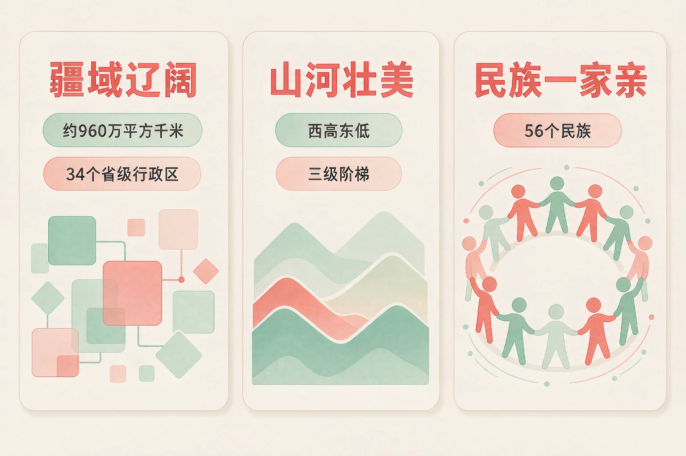
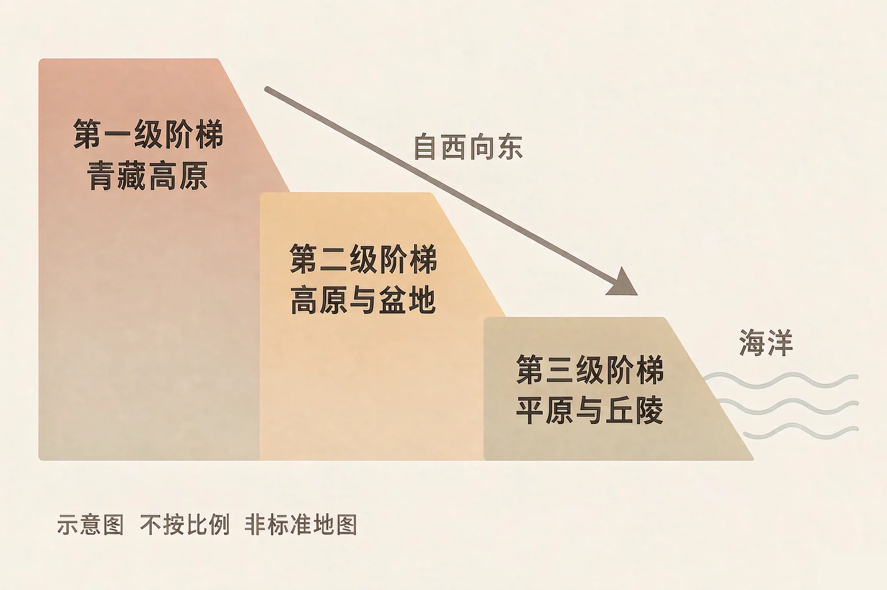
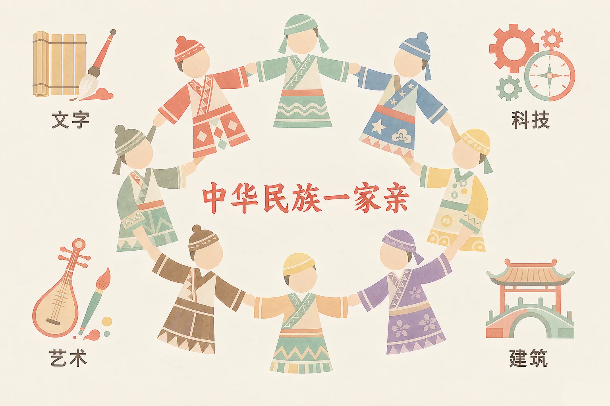

Gallery
v1.0.0 · skill v7.22.0
小学五年级 · 国情与公民意识
我们脚下的这片土地有多大，它又把什么样的人聚在一起？

选一个你真正想知道的问题，后面的活动都会围着它转。
选择或输入后，这节课会围绕你的问题展开。
先凭直觉选一个，选完立刻看到解释——错了也没关系，正好知道要重点听哪里。
1. 我国陆地面积大约是多少？
我国陆地面积约 960 万平方千米，是规范表述。错因提醒：常见错误是数量级记错——数字后面带「万」时，要读一遍再确认。
2. 我国地势的整体特点是什么？
我国地势西高东低，大致呈三级阶梯分布，所以许多大河自西向东流。错因提醒：有的同学把方向搞反了——想一想，长江、黄河的水是往哪边流的。
3. 关于我们家园的说法，下面哪一句是规范的？
台湾是中国不可分割的一部分，台湾省是我国的一个省级行政区；香港、澳门是中国的特别行政区，一律写作中国香港、中国澳门。错因提醒：这类说法必须说得准确，出现含糊或错误的表述时，要立刻改过来。
为什么要学这一课？
我们每天走过的街、吃到的米饭、看到的天气，都在祖国这片土地上（And）；可要问「我国有多大、家园有哪些不一样」，很多同学只能说出零碎印象，甚至说不准确（But）；所以这节课先把疆域、地势和行政区划弄清楚，把话说规范（Therefore）。
我国位于亚洲东部、太平洋西岸，陆地面积约 960 万平方千米。我国大陆濒临的海洋，从北到南依次是渤海、黄海、东海、南海——海域和岛屿，同样是我们家园的一部分。

行政区划：全国分为省、自治区、直辖市和特别行政区，共 34 个省级行政区
目前有 23 个省、5 个自治区、4 个直辖市和 2 个特别行政区。这里两句话必须说准确：台湾是中国不可分割的一部分，台湾省是我国的一个省级行政区；香港、澳门是中国的特别行政区，写作「中国香港」「中国澳门」。此外，钓鱼岛及其附属岛屿是中国固有领土，南海诸岛是中国固有领土。
有的同学误认为我国只有陆地、海洋不算家园，也有的同学误认为省级行政区就是「省」一个类型，把自治区、直辖市和特别行政区漏掉了。这四类都属省级行政区，加起来一共 34 个。
🔍 深层理解 换个角度再看一遍这件事，看看能不能说出背后的原理。
看见它：同样一条河，从青藏高原一路向东流到海里——它流向哪里，其实是地势在替它选路。
解释它：为什么大河大多自西向东流？因为西边高、东边低；水总是从高处往低处走，方向由地势决定。
迁移它：地势还影响了别的事：东边的城市港口多，西边的太阳能和地热丰富，同一片土地上做的事不一样，原因常常藏在地形里。
先点左边一个地域，再点右边一张 自然风貌与物产卡。配对了会连起来，配错了会告诉你错在哪里。
先点左边一个地域。
我国是统一的多民族国家，由 56 个民族组成。汉族人口最多，其他 55 个民族人口相对较少，习惯上称为少数民族。
各民族怎样居住
大杂居、小聚居、交错居住——你中有我、我中有你，很多地方几个民族同村、同街、同校。
我国坚持什么
民族平等、民族团结、各民族共同繁荣；在少数民族聚居的地方实行民族区域自治。
五个自治区
内蒙古自治区、广西壮族自治区、西藏自治区、宁夏回族自治区、新疆维吾尔自治区。自治区是中华人民共和国的地方行政区域，是在国家统一领导下实行区域自治，绝不是独立的国家。

一句可以随身带的话
我们的家园是一个不可分割的整体：台湾是中国不可分割的一部分；香港、澳门是中国的特别行政区；钓鱼岛及其附属岛屿、南海诸岛是我国固有领土。把这些话说准确，就是在守护家园。
有的同学把民族区域自治搞混成「独立」，这是绝对不行的；也有的同学误认为少数民族离自己很远，可我们班里、楼上楼下，就可能有不同民族的同学和邻居。尊重各民族的风俗习惯，就是尊重我们共同的家人。
🔍 深层理解 换个角度再看一遍这件事，看看能不能说出背后的原理。
看见它：同一个教室里，可能有吃不同风味午餐、过不同节日的同学——但大家写的是同一种文字，唱的是同一首国歌。
解释它：为什么各民族能一起生活得很好？因为坚持民族平等和民族团结，谁也不比谁高、谁也不被落下；自治区在国家统一领导下实行区域自治，是「一起过日子」而不是「各过各的」。
迁移它：这套想法在班里也一样用得上：差异不是分开的理由，互相尊重、彼此了解，才是一个大家庭的样子。
点开一条「我国之最」，先在三个选项里猜一个，再看答案和理由。猜错了会告诉你错在哪里。
先点一条我国之最。
情境：班里要办一期「祖国知多少」展板，几位同学写了五条说法。请你当一次校对员，判断哪条规范、哪条必须改。
有的同学误认为省级行政区就是「省」，把自治区、直辖市和特别行政区漏掉了；也有同学把香港、澳门当成国家来写。把话说准确，展板才立得住。
先凭直觉选一个，选完立刻看到解释——错了也没关系，正好知道要重点听哪里。
1. 关于我们家园的疆域，下面哪句话说得准确？
我国陆地面积约 960 万平方千米，共有 34 个省级行政区；渤海、黄海、东海、南海同样是我们家园的一部分。错因提醒：常见错误是把数量级记错，或者误认为海洋不算家园——海域和岛屿也是家园的一部分。
2. 关于我国地势和河流，下面哪句话说得准确？
地势决定水流方向：西高东低，所以长江、黄河都自西向东流。错因提醒：有的同学把方向搞混了，把「西高东低」说成「东高西低」；只要想一想水往低处流，就不会搞反。
3. 关于我国是统一的多民族国家，下面哪句话说得准确？
我国是统一的多民族国家，56 个民族共同组成中华民族大家庭；自治区是中华人民共和国的地方行政区域。错因提醒：把民族区域自治误认为「独立」是绝不能出现的错误说法。
三步各选一个：我想介绍的方面 → 我想用这条表述 → 我想这样说明。选完，你就设计出了一张可以贴上展板的名片。
从第一步开始选。
把它写下来：
如果让你给外地的朋友介绍自己的家乡，你最想先说哪一件事？试着写三句话，其中至少有一句要用上数字或地名，并且说得规范。
先凭直觉选一个，选完立刻看到解释——错了也没关系，正好知道要重点听哪里。
1. 同学写作文时写了「我国有 34 个省级行政区，其中包括台湾省」，这句话：
台湾是中国不可分割的一部分，台湾省是我国的一个省级行政区，这句话是规范的。错因提醒：见到任何含糊或错误的说法，都要立刻改过来，不能含糊过去。
2. 天气预报说「一股冷空气从北方南下，影响长江中下游平原」。结合地势想一想，下面哪种说法更合理？
地势会影响气流和水流：西高东低，海洋暖湿气流可以深入内陆，北方冷空气也容易南下。错因提醒：容易把地理现象当成互不相关的巧合；其实地形常常是背后那个原因。
3. 班里转来一位少数民族的同学，他的家乡过节时会办那达慕。作为同班同学，下面哪种做法更好？
各民族文化交流交融，才汇成中华文化；互相尊重、彼此了解，是一个大家庭该有的样子。错因提醒：有的同学误认为「不一样就不好」——不一样恰恰是我们家园丰富的地方。
一句口诀：约九百六十万，三十四个省级区；西高东低三级梯，大河滚滚向东去；五十六族一家亲，领土完整记心里。
给别人讲一遍：请用「地势」「省级行政区」这两个词，给家里人讲一件我国国土的事，并说说为什么要把话说准确。
再动一动手：写一写你家乡所在省级行政区的名字和它最大的特点，写清楚名称、位置和一样物产。
三层练习，做完第一、二层就算通关；第三层留给愿意继续探索的同学。
⭐ 基础巩固（必做）
⭐⭐ 能力应用（必做）
⭐⭐⭐ 迁移挑战（选做）
左边是学它之前要先会的，右边是学会之后可以继续探索的，下面是同一领域的伙伴知识。
图谱正在加载：首次进入需下载知识索引（约 1–3 秒），加载完成后本行会自动消失。